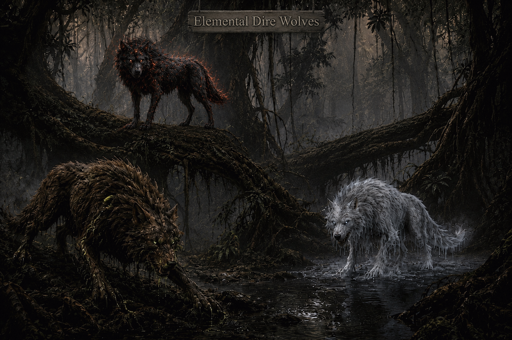

Creatures of Stonespire
Wild Things
The Parable experiments did not remain contained to their labs. Some subjects escaped. Some bred. Some evolved into something the original researchers never intended. The forests of Stonespire Island are not merely dangerous — they are alive with things that were made, not born.

Stonespire Island
Ogzul's Pack
Experiments that escaped the lab. Something the Parable researchers never intended.
Ogzul's Pack — Encounter Notes
All of Ogzul's pack can cast the Message cantrip as a bonus action at will. During the first encounter in Session 1 (Area 6 — Edge of the Forest), only three wolves are present: the Earth Dire Wolf, the Frost Dire Wolf, and the Fire Dire Wolf. Ogzul himself does not appear. The Storm Dire Wolf is not present either.
Speak with Animals
If the party has Speak with Animals active, they may attempt to communicate with the wolves. Regardless of whether conversation or combat follows, a distant howl interrupts the wolves — the Frost and Fire wolves quickly depart into the woods. The Earth Dire Wolf (Agrom) stays behind. He thinks it unwise to leave them wandering. He is less easy to sway passively than the others.
Earth Dire Wolf (Agrom) CR 8
Large Elemental · Neutral · Created by the Parable Experiments
A massive wolf with matted brown fur growing in thick clusters. Thick roots coated in black-green ichor run beneath its skin like exposed veins. Retractable claws resemble jagged stone shards; elongated fangs drip toxic poison. Its eyes glow emerald green when gathering magical power.
AC 17 (Natural Armor)
HP 136 (16d10 + 48)
Speed 50 ft., Burrow 20 ft.
STR22(+6)
DEX14(+2)
CON17(+3)
INT6(−2)
WIS14(+2)
CHA10(+0)
Saves Str +9, Con +6
Skills Perception +5, Stealth +5, Survival +5
Resistances Poison, Bludgeoning
Immunities Poisoned (condition)
Senses Darkvision 120 ft., Tremorsense 60 ft.
Pack Hunter. Advantage on attacks if an ally is within 5 feet of the target.
Earthen Resilience. While standing on natural earth or stone, regains 10 HP at the start of its turn.
Toxic Blood. Creatures striking it in melee take 5 (1d10) poison damage.
Multiattack. One Bite and one Claw.
Poison Fang. +9 to hit, Reach 10 ft. Hit: 20 (2d12 + 7) piercing + 13 (3d8) poison. DC 16 Constitution save or become Poisoned for 1 minute.
Root Claw. +9 to hit, Reach 10 ft. Hit: 17 (2d8 + 8) slashing. DC 16 Strength save or Restrained until end of next turn.
Verdant Rupture (Recharge 5–6). 20-foot radius. DC 16 Dexterity save. Failure: 27 (6d8) bludgeoning + 13 (3d8) poison, knocked prone.
Special: Can cast Spike Growth once per combat.
Fire Dire Wolf CR 8
Large Elemental · Neutral · Created by the Parable Experiments
A massive wolf with black fur broken by glowing ember veins beneath the surface. Its breath releases visible heat distortions and its eyes burn like molten coals.
AC 17
HP 128 (15d10 + 45)
Speed 60 ft.
STR22(+6)
DEX16(+3)
CON16(+3)
INT6(−2)
WIS14(+2)
CHA10(+0)
Immunities Fire (damage)
Senses Darkvision 60 ft.
Living Inferno. Melee attackers take 7 (2d6) fire damage.
Multiattack. One Bite and one Claw.
Flame Bite. +9 to hit. Hit: 18 (2d10 + 7) piercing + 13 (3d8) fire. Target ignites and takes 2d6 fire damage each round until extinguished.
Molten Claw. +9 to hit. Hit: 19 (2d8 + 8) slashing + 7 (2d6) fire.
Inferno Howl (Recharge 5–6). 30-foot cone. DC 16 Dexterity save. Failure: 42 (12d6) fire damage.
Special: Can cast Fire Breath through its nostrils once per combat.
Frost Dire Wolf CR 8
Large Elemental · Neutral · Created by the Parable Experiments
A giant white-furred predator coated in rime and frost. Icicles hang from its mane and tail while freezing mist escapes its jaws.
AC 17
HP 140 (16d10 + 48)
Speed 50 ft.
STR22(+6)
DEX14(+2)
CON17(+3)
INT6(−2)
WIS14(+2)
CHA10(+0)
Immunities Cold (damage)
Resistances Bludgeoning
Senses Darkvision 60 ft.
Frozen Hide. Melee attackers take 5 (1d10) cold damage.
Winter Hunter. Ignores ice and snow difficult terrain.
Multiattack. One Bite and one Claw.
Frost Fang. +9 to hit. Hit: 20 (2d12 + 7) piercing + 10 (3d6) cold. Target's speed reduced by 15 feet.
Ice Claw. +9 to hit. Hit: 17 (2d8 + 8) slashing + 7 (2d6) cold.
Glacial Breath (Recharge 5–6). 30-foot cone. DC 16 Constitution save. Failure: 36 (8d8) cold, Restrained in ice.
Special: Can cast Ray of Frost (3d8 damage) once per combat.
Storm Dire Wolf CR 8
Large Elemental · Neutral · Created by the Parable Experiments
A gray-furred wolf with faint arcs of electricity running through its coat. Thunder rumbles softly whenever it moves.
AC 18
HP 126 (15d10 + 45)
Speed 60 ft.
STR22(+6)
DEX18(+4)
CON16(+3)
INT6(−2)
WIS14(+2)
CHA10(+0)
Immunities Lightning (damage)
Resistances Thunder
Senses Darkvision 60 ft.
Lightning Reflexes. Advantage on Dexterity saving throws.
Static Aura. Creatures starting their turn within 10 feet take 1d8 lightning damage.
Multiattack. One Bite and one Claw.
Lightning Fang. +9 to hit. Hit: 18 (2d10 + 7) piercing + 14 (4d6) lightning.
Thunder Claw. +9 to hit. Hit: 18 (2d8 + 8) slashing + 7 (2d6) thunder. DC 16 Strength save or pushed 15 feet.
Tempest Howl (Recharge 5–6). 30-foot radius. DC 16 Constitution save. Failure: 31 (7d8) thunder, Deafened, Knocked prone.
Special: Can cast Thunderstep once per combat.
✦ ✦ ✦
Ogzul, Progenitor of the Pack CR 16
Subject 2-1 · "Adaptive Apex Prototype" · Huge Elemental Monstrosity · Neutral Evil
Standing nearly 22 feet tall at the shoulder, Ogzul is a terrifying fusion of elemental energies. His fur is black as midnight. His mane contains glowing embers hidden beneath the fur, creating the appearance of smoldering ash — wisps of smoke drift continuously from his shoulders. Electric-blue energy burns in his eyes. His fangs and tail are coated in supernatural frost. Long black claws drip green ichor onto the ground. The surviving Parable records classify him as an extinction-level predator.
AC 20
HP 315 (30d12 + 120)
Speed 60 ft., Burrow 20 ft.
STR28(+9)
DEX18(+4)
CON26(+8)
INT10(+0)
WIS18(+4)
CHA18(+4)
Saves Str +15, Dex +10, Con +14, Wis +10
Skills Perception +16, Survival +10, Stealth +10, Intimidation +10
Resistances Cold, Fire, Lightning, Poison, Thunder
Immunities Poison (damage); Poisoned, Frightened (conditions)
Senses Darkvision 240 ft., Tremorsense 120 ft.
Legendary Resistance (3/Day). If Ogzul fails a saving throw, he can choose to succeed instead.
Alpha of the First Pack. All wolves within 120 feet gain: advantage on attacks, advantage on fear saves, +10 ft. speed.
Elemental Hide. Melee attackers take 2d6 Fire, Cold, Lightning, or Poison damage (Ogzul's choice).
Experimental Regeneration. Regains 15 HP at the start of each turn. Disabled until end of next turn if Ogzul takes Force damage.
Apex Predator. Cannot be magically slowed. Opportunity attacks against him are made with disadvantage.
Multiattack. One Bite and two Claws.
Frostfang Bite. +15 to hit. Hit: 31 (4d10 + 9) piercing + 13 (3d8) cold + 13 (3d8) lightning. DC 22 Constitution save or Speed becomes 0 until end of next turn.
Ichor Claw. +15 to hit. Hit: 27 (4d8 + 9) slashing + 13 (3d8) poison. DC 22 Constitution save or Poisoned for 1 minute (3d6 poison damage each round).
Frozen Tail. +15 to hit. Hit: 26 (3d10 + 9) bludgeoning + 14 (4d6) cold. DC 22 Strength save or knocked prone.
Elemental Cataclysm (Recharge 5–6). 40-foot radius. DC 22 Dexterity save. Failure: 6d6 Fire + 6d6 Cold + 6d6 Lightning + 6d6 Poison, knocked prone. Ground becomes difficult terrain.
Predator's Leap. Leap up to 40 feet. Creatures within 10 feet of landing: DC 22 Dexterity save or 4d6 bludgeoning and prone.
Detect. Ogzul makes a Perception check.
Claw Attack. Ogzul makes one Ichor Claw attack.
Elemental Surge (2 Actions). Creatures within 10 feet take 3d6 elemental damage.
Pack Command (3 Actions). Up to three allied wolves move up to their speed and make one attack each.
Grasping Roots. One creature Ogzul can see: DC 20 Strength save or Restrained until end of next round.
Storm Pulse. One creature Ogzul can see takes 4d8 lightning damage.
Predator's Howl. All allied wolves move up to their speed without provoking opportunity attacks.
Special: Can cast Counterspell (level 5), Fireball, Thunderstep, Hunger of Hadar, and Wall of Stone once each per combat. Misty Step at will as a bonus action.
Parable Research Record
Designation: Subject 2-1 · Experiment: Adaptive Apex Predator Program · Status: Escaped · Termination Attempts: Failed · Threat Assessment: Extreme
"Should Subject 2-1 establish a breeding population, immediate evacuation of surrounding territories is advised." — Recovered Parable Research Log, Stonespire Island
✦ ✦ ✦
Flora of Stonespire
Nightbloom Seraphica
"Beauty that stills the body, balm that saves the soul."
Nightbloom Seraphica RARE FLORA
Large Plant · Unaligned · Stonespire Island
Its petals shimmer in hues of blue and lavender, surrounding a radiant bed of silver-white pollen. From its heart rises a single pistil of deep purple and black, dancing with an almost hypnotic grace in even the slightest breeze. Legends tell of ancient alchemists and healers who prized this flower for its dual nature — deadly to the unwary, life-saving in the hands of the knowledgeable.
AC 12 (Natural Armor)
HP 22 (4d10)
Speed 0 ft.
STR10(+0)
DEX12(+1)
CON13(+1)
INT8(−1)
WIS14(+2)
CHA10(+0)
Immunities Poison, Psychic (damage)
Rarity Rare (DC 18 Survival to locate)
Plant Nature. Immune to poison and psychic damage.
False Attractant. Emits a subtle sweet fragrance in a 30-foot radius. Creatures entering must succeed on a DC 14 Wisdom (Perception) check or be charmed until end of next turn, using their action to approach the flower.
Paralyzing Stinger. A creature touching the pistil or struck by it must succeed on a DC 15 Constitution save or be Paralyzed for 1 minute. Repeatable at end of each turn.
Dual Nature (Pollen). The pollen at the base of the pistil acts as a natural antivenom. A creature poisoned by a venomous creature can be cured if the pollen is properly prepared.
Pistil Lash. Melee Weapon Attack: +4 to hit, reach 5 ft. Hit: 5 (1d6 + 2) piercing. DC 15 Constitution save or Paralyzed for 1 minute.
Toxin Gland. DC 15 Medicine or Nature check + thieves' tools to extract carefully. One use of paralyzing poison (DC 15 Con save or paralyzed 1 minute). Market value: 1,000 gp.
Pollen. DC 15 Medicine check. Acts as antivenom against poison effects. Market value: 250 gp.
Intact Flower. Market value: 500 gp.
DM Note
Rarely found outside ancient groves, moonlit clearings, or places where the veil between life and death is thin. Blooms only once every three years under the light of a full moon. Stonespire's unique magical environment may support year-round growth in isolated locations.
✦ ✦ ✦
Fauna of the Caves
Necrotic Bats
They were ordinary once. Stonespire made them something else.
The caves and caverns of Stonespire Island are home to colonies of bats altered by prolonged exposure to the island's ambient magic and the underground river system that runs beneath the Parable facilities. What began as ordinary cave bats has, over generations, become something considerably more unsettling.
Necrotic bats carry a faint aura of negative energy — not enough to kill outright, but enough to drain warmth, suppress healing, and cause a creeping numbness in anything they feed upon. Their guano has alchemical applications that certain researchers on the island have been known to harvest. The bats themselves seem to avoid the Parable facilities entirely — as though something about the arcane resonance there unsettles them.
DM Note — In the Caves
A colony of necrotic bats disturbed in Area 5 (The Mass Grave cavern) or the underground river system makes for excellent environmental tension without requiring a full combat encounter. A startled swarm deals minimal damage but applies 1 level of exhaustion on a failed DC 13 Constitution save. Their presence is a signal that this place has been touched by necrotic energy for a very long time.
✦ ✦ ✦
Flora & Fauna of the Groves
Mushroom Fairies
Small, luminescent, and stranger than they look.
The mushroom groves of Stonespire — particularly Hollowstalk — are home to a rare and unusual strain of fairy deeply intertwined with the island's ambient magic. Small, luminescent, and flickering between visible and not, they have made their homes among the towering caps of the most ancient groves, drawn by the magical properties of the underground river's mist.
They appear playful, but they communicate in cryptic, layered ways that suggest intelligence far older than their size implies. Some believe the Mushroom Fairies remember the island's history in ways no other creature can — as living witnesses to everything that has ever happened here. They do not speak of it freely.
DM Note — Hollowstalk
The fairies that inhabit Hollowstalk near Loralyn Petaldrop's grove are more approachable than most. They regard Loralyn with something between affection and reverence. A party that earns their trust may find them surprisingly useful sources of information — if they can learn to ask the right questions in the right way.